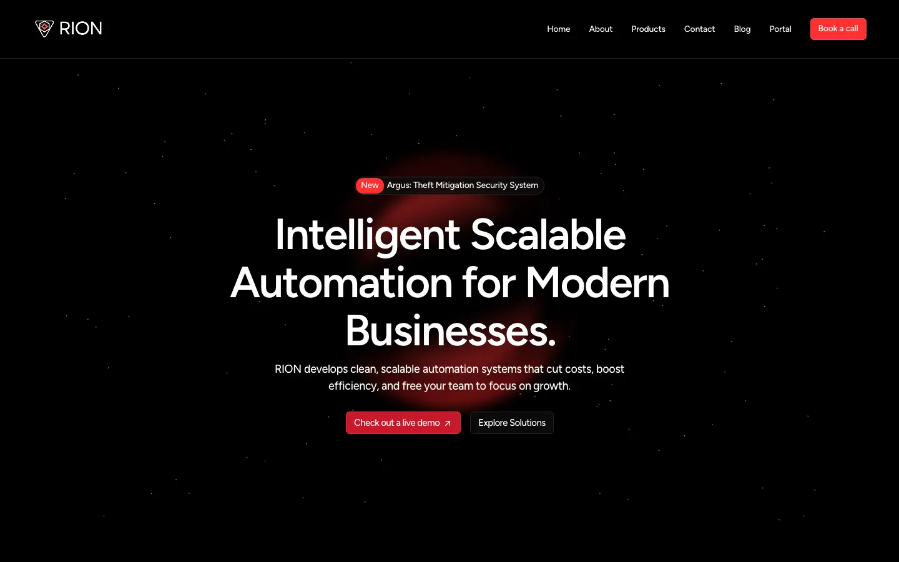
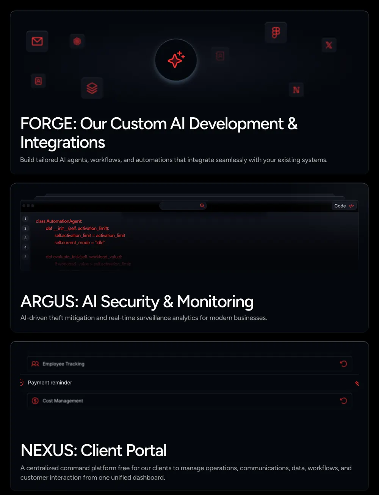

Automation engineer
RION Solutions
An AI automation agency, and the parent company of Argus.
- rionsolution.com
- Private repo

By the numbers
- 70%faster client onboarding
- 10K+AWS transactions a day
- 40%faster deploys
- 1K+county lookups a day
- 95%on-time delivery
- 8+client deployments
What I did
- Automated client intake end to end. Onboarding got 70% faster and duplicate entries stopped.
- Kept 10K+ AWS transactions a day running.
- Made deploys 40% faster with Docker and GitHub Actions.
- Put 3 county record systems behind one API, with caching for 1K+ lookups a day.
- Delivered 95% on time across 8+ client deployments.
The three products
- FORGECustom AI builds.
- ARGUSSecurity and monitoring. It became Argus.
- NEXUSThe client portal. It became the Argus Dashboard.
Notable projects

NEXUS Command Center
An admin dashboard for RION’s Stripe payments, and the server behind it.
See the project
County records API and client intake
One API in front of 3 county record systems, and client intake that runs on its own.
See the project
RION Solutions website
A rebuild of the RION Solutions website in Next.js.
See the project
Client work delivered through RION
Gallery

The three products on rionsolution.com.